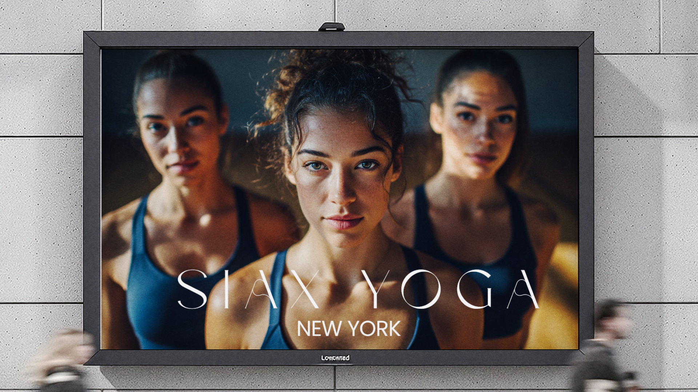
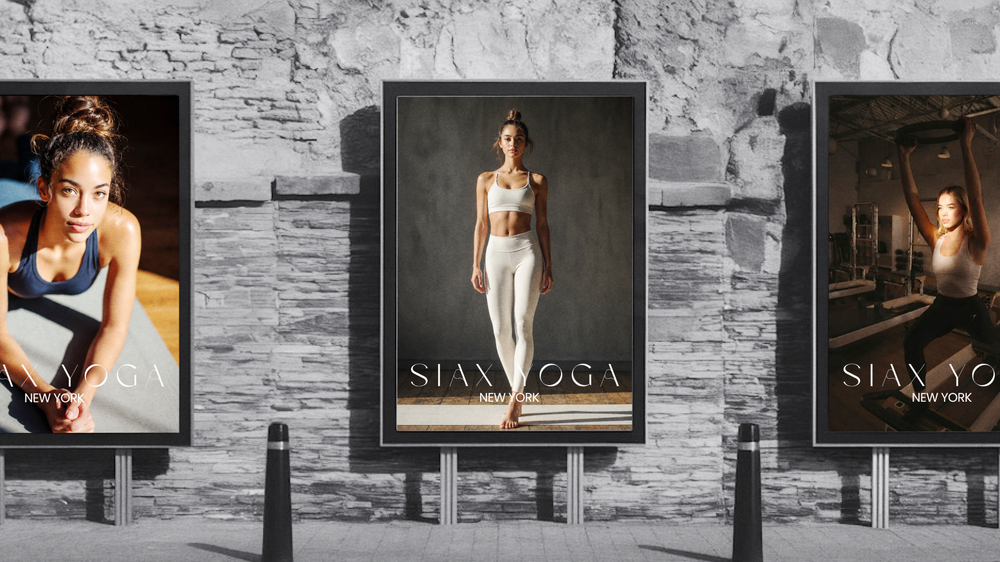

Siax Yoga

Overview
Siax Yoga (pronounced "see-ah") is a fictional luxury yoga and Pilates brand created to explore how AI can be used to produce high-end marketing and advertising content for the beauty and wellness industry. Rather than relying on traditional photoshoots, I used generative AI to create natural-looking models, premium studio imagery, and a cohesive visual identity that feels calm, modern, and luxurious. While the project is primarily focused on branding and marketing, I also applied UX thinking to shape how customers discover the brand, explore offerings, and move toward booking a class.


The Opportunity
Many boutique fitness studios look and market themselves in similar ways, making it difficult to stand out in a competitive city like Manhattan. The goal was to create a brand that felt elevated and memorable while still feeling warm, approachable, and authentic. I wanted to show how AI could help produce premium campaign assets faster without sacrificing quality or the overall customer experience.
Process
Using generative AI, I experimented with different models, facial features, hairstyles, wardrobe, lighting, studio environments, and camera angles to find the right visual direction. Each round of iteration focused on making the imagery feel less artificial and more editorial—similar to what you'd see in a luxury wellness campaign. I also considered how the visuals would translate across social media, landing pages, digital ads, and promotional emails to create a consistent brand experience from the first impression through class booking.
Solution
The final creative direction presents Saix Yoga as more than just a fitness studio—it's positioned as a modern wellness destination. The brand combines clean design, calming visuals, premium amenities, and community-focused experiences to create a lifestyle that people want to be part of. Every image and marketing asset was designed to reinforce that feeling across multiple digital channels.
Business Impact (Concept)
Although this is a conceptual project, the success metrics reflect realistic business outcomes that a campaign like this would aim to achieve.
Outcome
This project showcases how AI can be used as a creative partner to build compelling marketing campaigns for beauty and wellness brands. It highlights my ability to combine visual storytelling, branding, AI image generation, and UX thinking to create experiences that not only look beautiful but also support meaningful business and marketing goals.